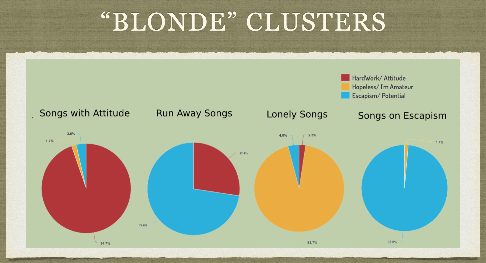
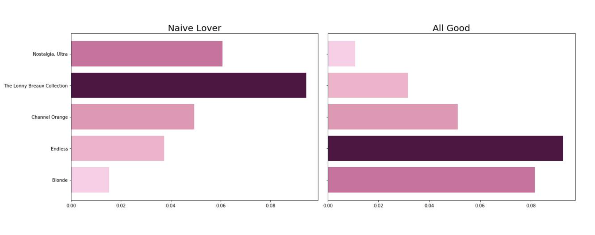

Frank Ocean Lyrics
Topic Modeling an Artist's Discography

"All the things I didn't mean to say, I didn't mean to do, There were things you didn't need to say, You didn't need to" ~Frank Ocean
Frank Ocean is one of the most inspirational modern day song writers in my view, and any fan would agree and tell you that “Blonde” is where you can find his best writing. As a songwriter, I find that the hardest part of the process is in fact developing quality lyrics. In this NLP project, the goal was to investigate what topics Frank Ocean sings/raps about across his entire discography, then more individually on his album “Blonde,” in order to hopefully foster inspiration in my writing and to see the “topical recipe” behind his masterful songs. Then, since the lyrics will have been scraped already, it would be fun to try some lyric generation in the style of Frank Ocean.
Blonde
First, I'll walk you through the results for the analaysis on his songs in blonde. In the legend at the top right, you'll see the 3 topics that were generated after topic modeling just the one album using TF-IDF and NMF: red, the topic of working hard with attitude, yellow, the topic of hopelessness and insecurity, and blue, the topic of escapism and the potential future. I personally chose these topic titles based on the top 10 most frequent words of each topic and with the help of a little content knowledge. The most frequent words for each topic are as follows:
- Red - night, got, and a lot of curse words
- Yellow - solo, inhale, hard, kid, and I'm (I am)
- Blue - life, dream, love, anything, and I'd (I would)
Each pie charts represent an individual cluster, that was done through KMeans Clustering, and the “dose” of each topic that makes up that cluster. The first, third, and fourth cluster all consist of greater than 90% of the red, yellow, and blue topic, respectively. This implies that the songs in these clusters are transparently aligned with their respective topics. For example, a song that would be in the mostly yellow cluster, “Lonely Songs,” would be “Solo,” a song mostly about loneliness. The second cluster, or pie chart, is a mix of 76% escapism (blue) and 24% hard work (red) and, therefore, could be thought of as “Run Away Songs” (in other words, “working hard at esaping”).
Frank Ocean's Lyrics Over Time
For the entire discography, I did the same process as above: I scraped all of Frank Ocean's song lyrics from the internet, and I used TF-IDF and NMF to topic model over documents. After, instead of clustering, I grouped the songs based on album and analyzed how the album's average topic distribution changed over time. Above, you can see the two most prominantly changing topics. The topic "Naive Lover," with words like love, sucker, and baby, decreased in popularity as Ocean matured. Meanwhile, the topic "All Good," with words like life, sweet, and best, increased as time progressed. This may speak to how Frank Ocean started his carreer as a naive lover, but he learned from his mistakes and things turned out alright, hence "All Good."
"Wishin away the rhythm on. The rate is sky, but yea I'm up here. Spaceships" ~Markov Chains
After finding that Frank Ocean is no longer naive, I played around with a couple of naive approaches myself on text regeneration. The idea with Markov Chains is that for every word written by Ocean, there is a probability for each word that he chooses to followed it with. For example, if he says I'm he could possibly say I'm up, I'm not, or I'm everything, but would never say I'm you're, I'm but, etc. So if we start with one word, "Wishin' in the example above, and let probability do the rest, we come up with some cool/fun Markov Chains in the style of Frank Ocean.
Looking for more?
You can find the jupyter notebooks and python code I worked on, and more details and examples on this GitHub page.